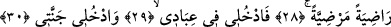

KEŞKE BU HAYATIM İÇİN
BİR ŞEYLER GÖNDERSEYDİM!
21. Hayır, yeryüzü parça parça döküldüğü,
22. Rabbin(in emri) geldiği ve melekler saf saf dizildiği zaman (her şey ortaya
çıkacaktır).
23. O gün Cehennem getirilir, insan yaptıklarını birer birer hatırlar. Fakat bu
hatırlamanın ona ne faydası var!
24. (İşte o zaman insan:) “Keşke bu hayatım için bir şeyler yapıp gönderseydim!”
der.
25. Artık o gün, Allah’ın edeceği azabı kimse edemez.
26. O’nun vuracağı bağı kimse vuramaz.
27. Ey huzura kavuşmuş nefis!
28. Sen O’ndan hoşnut, O da senden hoşnut olarak Rabbine dön.
29. (Seçkin) kullarım arasına katıl,
30. Ve Cennetime gir!
“Kellâ/Hayır” ifâdesi yukarda zikredilen fiilleri, terk ettikleri işleri ve inkârlarını
menetme anlamı taşımaktadır. Yâni bu işin dünyaya hırsla sarılma, bütün isteğini dünya
malını elde etme, haram helal demeden mal toplama ve bu maldan başkalarına yardım
etmeme, hesabın ve yapılanların karşılığının olmayacağı vehmine düşme şeklinde
olması uygun değildir. Çünkü bunun sonu, bâkî olan âhiret hayatına fânî olan dünya
hayatı tercih edildiği için pişmanlık ve hasrettir.
“Yeryüzü parça parça döküldüğü” Bu cümle menetmenin sebebini ortaya koymak
üzere tehdid yollu bir başlangıç cümlesidir.
“Dekk” bir şeye vurup ezmek, yerle bir etmek, dümdüz etmek demektir.
Halîl der ki: “Dekk” duvarı ve dağı kırmak demektir.
Müberred ise şöyle der: “Dekk” yukardakini yere yayarak alçaltmak demektir.
Âyetteki ikinci “dekken” birincinin tekidi değil tam tersine birincisinden başka bir